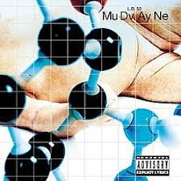
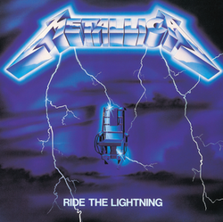

ALL ALBUMS

Album
Rust in Peace
An iconic thrash metal album with technical guitar work and intense themes.

Album
Dirt
A dark and emotional grunge classic with raw themes and unforgettable tracks.

Album
L.D. 50
A brutal and experimental metal journey packed with intense rhythms and raw emotion.
Album
In Utero
A bold and haunting farewell that captured Nirvana at their most unfiltered and defiant.

Album
Ride the Lightning
An electrifying thrash metal classic that combines technical prowess with intense themes.
Album
Black Sabbath
The haunting debut that laid the foundation for heavy metal as we know it.